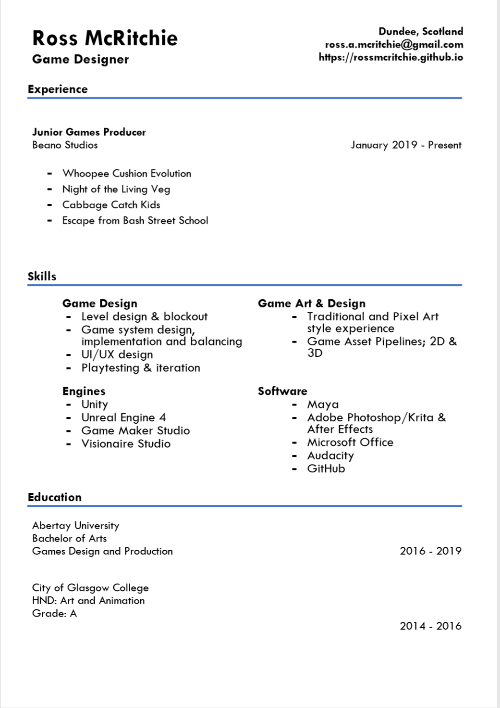

GAME DESIGNER | ARTIST
About me
Hi, I'm Ross, I'm a game designer and artist based in Scotland, UK. I develop games in both my spare time and professionally, spending much of my time working on environment design and game world development. I am particularly passionate about the graphic adventure and role-playing genres, I am also interested in combining R.T.S/T style elements within tradition Role-playing games.
Currently I am working on a project exploring the use of video game environment design within the context of history.
CV/RESUME
Click image for PDF
